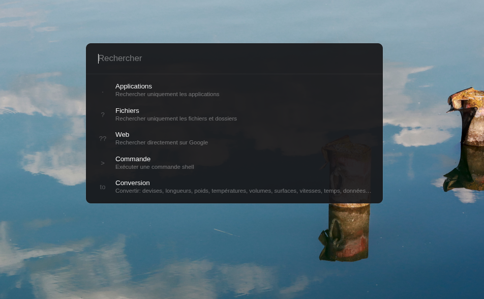

01
Retrouvez instantanément
Applications système, Snap, Flatpak, fichiers et dossiers : commencez à saisir, Finder réduit le chemin.
. firefox
Le lanceur pensé pour Linux
Applications, fichiers, calculs et commandes. Finder rassemble l’essentiel dans une recherche rapide, discrète et entièrement pilotable au clavier.
Bêta gratuite · Linux x64 · Dernière version

Moins d’interruptions
Finder reste en arrière-plan jusqu’à ce que vous en ayez besoin. Un raccourci, quelques lettres, Entrée — puis vous reprenez votre travail.
Un seul point de départ
Une interface unique pour les actions quotidiennes, conçue pour disparaître dès que la tâche est accomplie.
01
Applications système, Snap, Flatpak, fichiers et dossiers : commencez à saisir, Finder réduit le chemin.
. firefox
02
Lancez une commande, effectuez un calcul ou convertissez unités et devises depuis le même champ.
to 10 km to mi
03
Navigation au clavier, historique récent et démarrage avec la session. Finder est prêt avant que vous le demandiez.
Alt + Espace
Aucune courbe d’apprentissage
Les préfixes restent optionnels. Utilisez Finder naturellement, ou affinez votre recherche quand vous le souhaitez.
Confiance vérifiable
Finder cherche localement. Le code peut être consulté et chaque publication est accompagnée d’éléments de vérification.
Vos fichiers restent sur votre machine.
Le fonctionnement peut être consulté et audité.
Checksums, signature Sigstore et provenance attestée.
Une bêta, en toute transparence
Finder est actuellement proposé gratuitement en version bêta. Le produit évolue encore et vos retours contribuent directement à ses priorités.
À l’avenir, certaines fonctionnalités ou certains usages pourraient intégrer une offre payante. Si le modèle évolue, les conditions seront annoncées clairement à l’avance — sans surprise.
Partager un retourQuestions fréquentes
Le paquet .deb est prévu pour Ubuntu et Debian. Une AppImage x64 est également proposée pour les autres distributions Linux compatibles.
Oui, la bêta est gratuite pour un usage personnel et non commercial. Une offre payante pourra être introduite plus tard ; tout changement sera communiqué en amont.
Non. L’indexation et la recherche de fichiers s’effectuent localement sur votre machine. Une recherche web n’est ouverte que lorsque vous la demandez explicitement.
Les versions Debian et AppImage vérifient les nouvelles releases et vous demandent avant de redémarrer pour appliquer une mise à jour.
Prêt quand vous l’êtes
Essayez Finder gratuitement pendant sa bêta.
Linux x64 · Bêta · Usage personnel gratuit